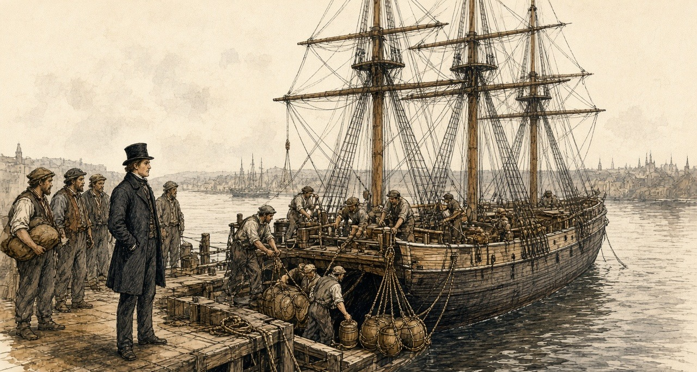
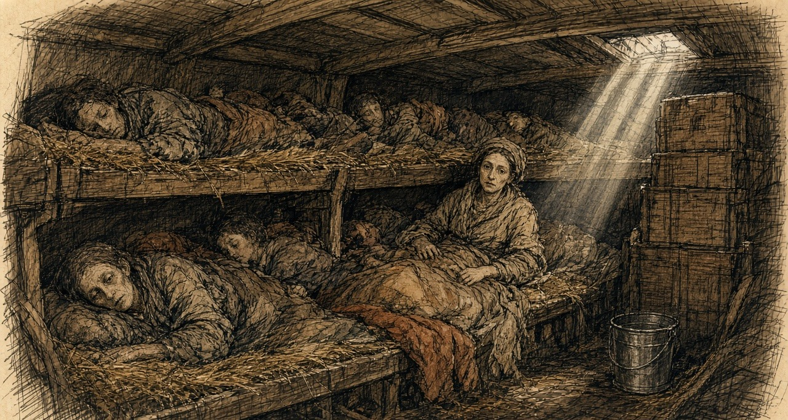
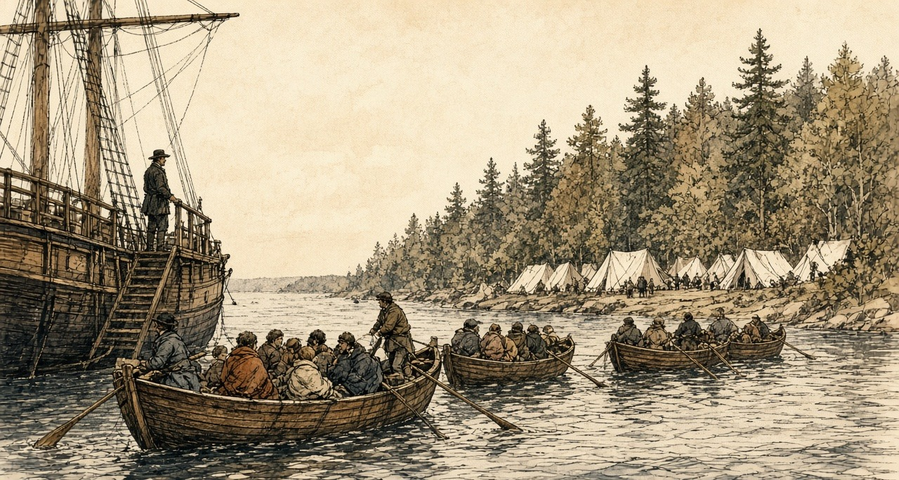
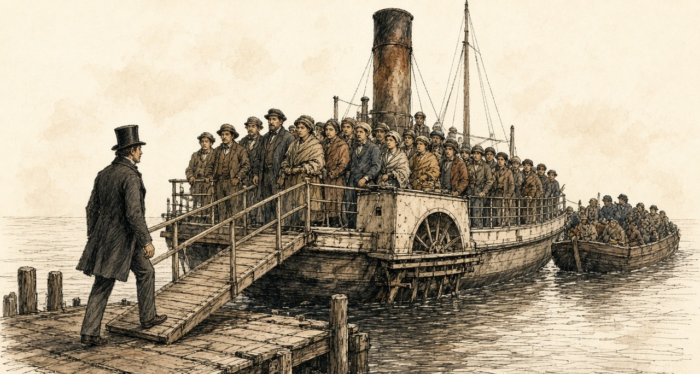
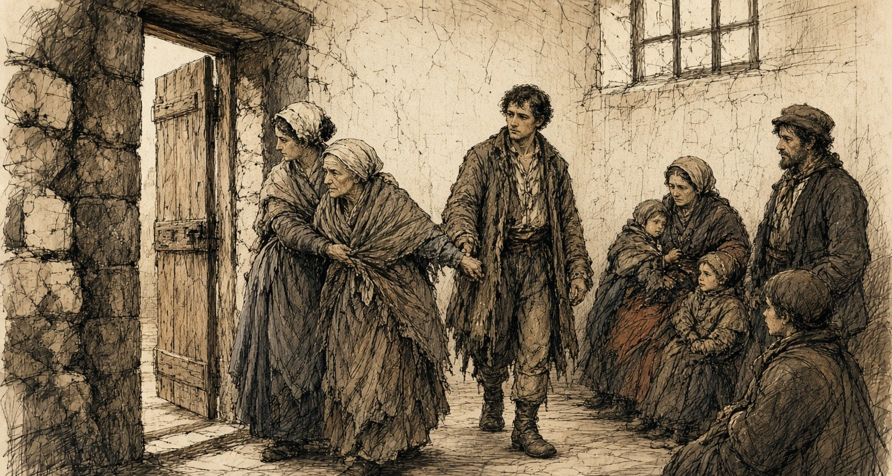
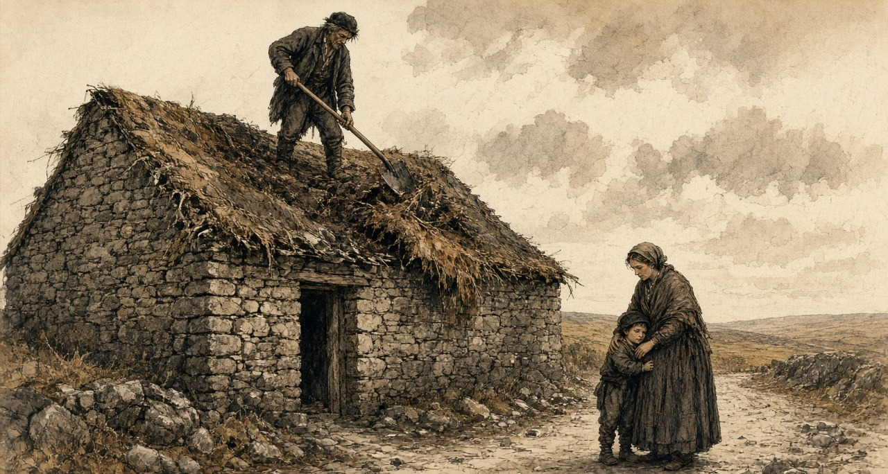
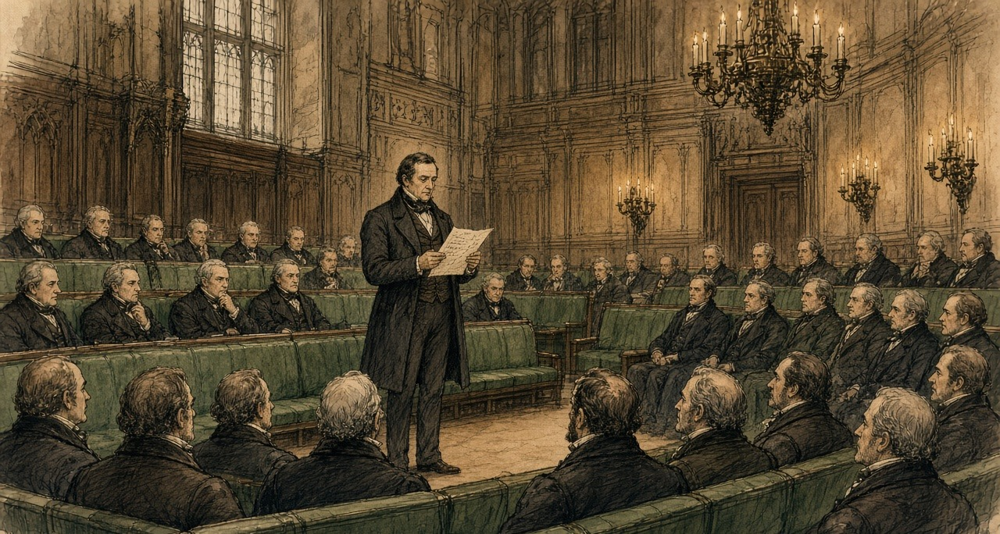

Chapter 10
A Fair Face for the Doctor, 1847–1848
Gravesend, the North Atlantic, the St. Lawrence, Canada West, St. John, the Kilrush union and Westminster, April 1847 to April 1848
When the public works stopped in the spring of 1847, Stephen de Vere had men on his hands. He was a younger son of the de Veres of Curragh Chase, in the county of Limerick, and through the winter a number of labourers had been employed on the public works under his supervision. His brother Aubrey set the order of events down fifty years later. "On the sudden cessation of the public works, he took passage for Canada with a considerable number of those who had been employed on them."
The diary he carried was bound in red leather. On the first page he wrote the names of his party: "S. De. V. P. O'Neill & wife J. Hanly Roger Kennedy J. Fitzgerald Johnny McDonagh."
They came up from Bristol by railway on the evening of Thursday, 29 April, and went straight aboard a barque in the Thames, the Birman. She went down the river to Gravesend that night. Hanly was ill before they had left the river.
The next day the Birman lay at Gravesend taking in cargo. It was gunpowder, Government powder, for the garrison of Quebec. De Vere went ashore and dined with Stephen S. Rice. Hanly was still ill.

On Saturday, 1 May, he wrote one word. "Sailed."
He had £1,300 lodged with a bank in London. He went in the steerage.
* * *
The steerage of the Birman, May and June 1847
The diary has nothing between the first of May and the ninth of June. What the voyage was he put down afterwards, from Canada West, in a letter to a Government man in London, and he wrote it as a man who had lain in the berths.
Before the emigrant had been a week at sea, he wrote, he was an altered man.
The passengers on the Birman were found in provisions by the owners, under a contract and a printed scale of dietary. The meat was of the worst quality. There was water enough in the casks. What reached the passengers was a different quantity. It was served out in a measure called a gallon, and de Vere tested the measure, and it held three quarts.
The ration was salt meat and rice, and both had to be boiled. There was not water for the pot and for the mouth as well. The passengers carried their salt provisions and their rice up the ladder and threw them over the side, because they had not water enough both for the cooking and for "the satisfying of their raging thirst afterwards."
There was no water left for washing. A passenger could wash only by taking it from the pot.
Some of them gave up getting out of the berths. "I have known persons to remain for days together in their dark close berths, because they thus suffered less from hunger, though compelled, at the same time, by want of water to heave overboard their salt provisions and rice."
The berths were dark because lights were forbidden. The ship had open fire-grates on deck for the cooking, and men lit lucifer matches and pipes in secret down in the sleeping places, and under them all, in the hold, was the powder for Quebec.
Nobody aired the beds. The master never once came down into the steerage in the whole voyage, and he would listen to no complaints. Once or twice a week spirits were sold to anyone who would pay for them, and the grog was the captain's profit. De Vere called what followed "scenes of unchecked blackguardism beyond description."
He lay among it in the dark. Between the berths and the piles of boxes there was a narrow space that was never washed or scraped, and it "breathes up a damp fetid stench." In many ships, he wrote, the filthy beds, "teeming with all abominations," were never brought up and aired. The fevered lay in among the sound, in sleeping places so narrow that a sick man could hardly turn over, and their ravings went on beside the ones who were trying to sleep.

On the third of June the Birman was on the Banks of Newfoundland. On the ninth she was off Cape Breton with land in sight. On the twelfth, west of Cape Gaspé and about 250 miles below Quebec, she lay in a dead calm, in thick fog. A squall came down from the north without warning and laid her over. She had the main royal set and all her studding sails. "Ship in great Danger." It lasted about five minutes. She came up slowly.
Then, the day before quarantine, came the cleaning. All hands were ordered to "scrub up," he wrote, "and put on a fair face for the doctor and government inspector."
On Sunday, 13 June, they took a pilot aboard, and the river began to narrow. He wrote down the woods running from the mountain tops to the shore, white rocks, gleams of snow. On the water were crowds of ships, outward bound. They were "taking out cargoes Of corn for Europe."
* * *
Grosse Isle, Wednesday, 16 June 1847
The quarantine station was on an island in the river below Quebec, and its medical superintendent was Dr. G. M. Douglas. He had been writing to the Government since May.
On 24 May he had reported "a state of illness and distress among the newly arrived emigrants, unprecedented in this country even during the prevalence of cholera in 1832 and 1834." Seventeen vessels with Irish passengers had come in since his last letter, from Cork and Liverpool, Sligo, Limerick, Belfast, Londonderry and New Ross. They had sailed with 5,607 people. Two hundred and sixty had died on the passage. Upwards of 700 were in hospital or lying sick on board, waiting for beds. He was turning the passengers' sheds into hospitals. A postscript: "Twelve vessels have arrived this morning, all more or less sickly." The Miriam, from Limerick, had buried twenty-four.
On 31 May the chief emigrant agent at Quebec, A. C. Buchanan, made a return. Thirty-six vessels at Grosse Isle, with 12,450 passengers. Six hundred and sixty-two deaths on the voyage. A naval officer had come up from the island that morning to tell him the people detained there were in the greatest want of food.
Douglas wrote again on 8 June, and Buchanan copied it out for the Governor-General. "I never saw people so indifferent to life; they would continue in the same berth with a dead person until the seamen or captain dragged out the corpse with boat-hooks."
The Birman came to anchor off the island at about seven in the morning of 16 June.
The doctor did not come. They waited for him all day. De Vere counted the ships waiting with them, about forty, and on shore he could see what looked like villages, white tents, for the sick. He heard that the daily mortality was about 150.
The Birman lay alongside a ship called the Jessy, in which many were ill. The water between the ships was not clean water. "Water covered with beds Cooking utensils refuse of the dead."
From the ships that had been inspected, the sick were going ashore in boats. He watched the boats go in. "Ghastly appearance of boats full of sick going ashore never to return. Several died between ship and shore."

In the boats wives went without their husbands, and children without their parents, because the doctor took the sick and left the well, and the well stayed aboard. One of the ships there was the Sisters, from Liverpool. Every passenger in her and every man of her crew had come in with fever. He wrote down afterwards that all of them died but the captain and one girl.
In the evening the doctor came aboard. The Birman's passengers stood on deck in a file, washed. "The medical inspections on board were slight and hasty – hardly any questions were asked – but as the doctor walked down the file on deck, he selected those for hospital who did not look well, and, after a very slight examination, ordered them ashore." Some were kept back who were not ill. Many were let go who were in fever.
The Birman got a clean bill of health.
The funds in the agent's hands, he found, were "altogether insufficient for care." The medical attendance was bad.
Dr. Douglas kept the figures for the whole season, and de Vere copied his tables into the diary the next winter. Between May and the beginning of November 98,106 emigrants arrived at Quebec. The quarantine hospital admitted 8,691 of them, and 3,238 died in it, 1,361 men, 969 women and 908 children. In August, at the height of it, the hospital held an average of 2,021 sick every day.
Douglas counted his own people too. Of twenty-six medical men, twenty-two took the fever and four died. Of 186 nurses, orderlies and cooks, many of them emigrants taken on when they recovered, twenty-two died. Two of the six carters hired to move "the sick, dying, and dead" died.
* * *
Quebec, June 1847
A steamer towed the Birman up to Quebec on 17 June, and de Vere kept his party on board until the Saturday, when he took lodgings for them at the O'Connells' in Champlain Street, in the lower town.
He went before Buchanan with a complaint against the master of the Birman, Captain Guthrie, for false measures of water. The captain wanted to settle it quietly. De Vere refused to settle except in Buchanan's presence, took the captain before him, and made him pay £10. He handed the £10 to the parish priest, the Rev. Mr. McMahon, for the destitute emigrants, and the priest acknowledged it in the newspapers.
In Quebec he met men he knew. They were "Persons who had been working Under my orders last winter," and they were all in work, at about five shillings a day. There was better money to be had. He wrote it down without comment. "Enormous wages offered for Loading infected ships. 8 to 10/ per day."
* * *
Montreal and Toronto, July to September 1847
At Montreal, on 4 July, John Hanly fell ill. The doctor declared it a cold. On the evening of the 5th Hanly was much worse, with a dreadful headache and pains in the neck and back, and de Vere wrote the word he had been holding off. "Dreaded fever."
He sent the rest of the party on to Toronto and stayed with Hanly alone. He told Roger Kennedy what to tell the others in case it was fever, and he did not let Roger see the patient. He wrote a codicil to his will. The thermometer in the shade stood at 100. The next day the mercury in the sun went to the top of the tube at 135, "& then Rapidly rising – no air."
Hanly came through.
In Toronto, on Saturday, 24 July, Roger Kennedy took the fever. De Vere sat up with him through the nights. He gave him half a glass of port wine every four hours, and later wine or broth every two hours. On 31 July Roger was so weak that he sent for the priest, who gave him the rites of the Church after confession. Roger rallied in the evening. On 2 August the doctor said the fever was going off, and de Vere sat up again all night with him, reading Amelia. On the 3rd Hanly went down again with the bowels.
On Sunday, 25 July, he had written: "My birthday, my only Pleasure writing a long letter To my mother, Roger's fever heavy."
The Government sent its emigrants up the river by steamer, and in Toronto the emigrant agent, Edward McElderry, received them. Through September de Vere's diary has one line almost every day: "Watch wharf." He went down to the steamers with McElderry when they came in, and he described them afterwards.
They were small, incommodious and ill-ventilated, and they came in after forty-eight hours from Montreal "freighted with fetid cargoes of 1,100 and 1,200 Government emigrants of all ages and sexes." The healthy who had just arrived from Europe were mixed in with half-recovered convalescents from the hospitals. For two days they had not been able to lie down. They had hardly been able to sit. In almost every boat there was plain fever. In some there were deaths, and the dead and the living lay together.

When there was no room on board, the people were put on open barges towed behind the steamer, standing, he wrote, "like pigs upon the deck of a Cork and Bristol packet." A woman died in the Toronto hospital after she had been trodden down in one of those barges, when she was weak and fainting.
"I have, myself, when accompanying the emigrant agent on his visit to inspect the steamer on her arrival, seen him stagger back like one struck, when first meeting the current of fetid infection, exhaled from between her decks."
The Catholic Bishop of Toronto, Michael Power, had been visiting the sick emigrants himself since so many of his clergy were down. He died of typhus on 1 October. De Vere wrote him an obituary in the diary. "He did not spare himself."
On 6 November, at London, in Canada West, he heard that McElderry was dead of fever.
* * *
The Kilrush workhouse, county Clare, Wednesday, 17 November 1847
Since the first day of November is the quarter-acre law in force upon us. Gets me that holds the grass of the goat neither meal nor ticket nor shelter of the house—neither herself, nor the woman, nor the childer—while his grip is on the sod.
Is not a sod of ground at my mother. So is it my mother I take upon my shoulders.
Long and heavy is the road into Kilrush. Is no step in her feet, and carry her the seven miles between my two shoulders. Light is the burden of her necking and the fowl i the bare bones of her wrists knocking together on my collarbone, and every mile or two breathes she a small word in Irish into my ear, and is the voice so thin in her that I know not what she says.
At the far edge of the town stands the great workhouse. Built hard up against the wall of it is the fever shed, and is the strait that kept her in the chimney corner until-today was every mouth in Kilkee that that cross to gate that is to lie down in the winding-sheet.
Is the multitude wedged before the gate ahead of us. Sits the Board of Guardians on the Wednesday, is a new officer from Dublin among them—Captain Kennedy, they call him—and is he within since the break of day.
Stand i the press of the crowd for three hours and her weight hanging from my neck. Is no order or rank in it, an each soul shoving for the one narrow elbow, and a crying and a keening out of a hundred throats. Beside my elbow is a woman with a child hosted on her shoulder, and is the black collar on my mother's shawl. At my boots is a grown man stretched in the mud, rattling his teeth with the rigors of the relapsing fever.
The stench of that gate. is the smell of my own dark cabin at me, and the smell of the sour boilers, ach is the breath of the open grave itself.
Comes the Captain out into the yard, and has he the wanders drag the spotted ones and the raving ones apart to the side of the wall, and leaves the rest of us standing. Call the Guardians us through in the wicket then, and name they. Draw not back from the rags on the vermin on us—i will leave no le on them, they stood close to their work.
Took they her in. Spoke her name, and the townland, and asked the clerk what holding of land was at me, and told the straight truth of the three-quarters of an acre, and wrote he her down for the house, and shut he the book against myself.

Was the grip of her fingers still twisted in the wool of my sleeve when the porter loosed her hand to lead her within.
Walked I back to the town on the Sunday to get a sight of her face. Was there a small wicket-gate in the side wall of the fever yard where the country people used to slip in to look on their own. Was the iron bolt shot through the panes in the door, and stood out on the road for an hour, looking at the top of the wall.
Is the Indian meal cheaper in the shops of Kilrush this winter than it was in the summer. Are the sacks of it stacked in the rafters in every merchant's store, are the hovels at the cross.
* * *
Kilrush, November 1847
Captain Kennedy had arrived in Kilrush as temporary inspector for the Poor Law Commissioners on 9 November. His reports went to Dublin every few days, and the Commissioners printed them.
On 11 November he reported that 6,000 notices to quit had been served in the union. The rate warrant had gone out late. "A month earlier would have been a great matter, before the crops were swept by landlords or realized by tenants." Twenty-one had died in the workhouse the week before. "The contractor for coffins is unpaid, and threatens to 'stop the supplies.'" The hospital adjoined the workhouse, and "popular terror attributes all deaths in the house to fever," and the nearness of the one to the other kept people out.
On 18 November he described the board day.
"The admissions to the workhouse amounted to nearly 200. Such a tangled mass of poverty, filth, and disease, as the applicants presented, I have never seen. Numbers in all stages of fever and small-pox mingling indiscriminately with the crowd, and all clamouring for admission. I had them separated as quickly as possible." The Chairman and Guardians, "regardless of personal danger, examined and admitted them to the house or hospital. I was in the house from 11 o'clock a.m. till 6½ o'clock p.m., and returned to my lodgings covered with vermin!"
The contractor had supplied 535 coffins for the house alone in six months, "besides the large number given out of doors." Kennedy had seen "healthy children lying with and fondling those in the worst stages of small-pox and fever." On the last visiting day he had found a side gate open, and the friends of fever patients passing in and out of the hospital, and he had got an order to forbid it.
He went through the rate collectors' books. "All the lands under ejectment are literally bare of all stock or produce. Empty walls, an iron pot, and children in swarms, are all I can see or the collector find." He had got an order to proceed against two gentlemen, Messrs. John and Ralph Westropp, for arrears of rates. He hoped for the countenance of the Catholic clergy "in the collection of this most righteous impost."
"Provisions are cheap and plentiful."
That month an inspector in another union asked the Commissioners in Dublin what exactly counted as giving up land under the new Act. On 26 November they answered him. They could lay down no general rule. "All that is requisite is, that a party receiving relief should bonâ fide have ceased to occupy more than a quarter of an acre of land." As to the hardships of the clause, "the Commissioners are not insensible to them; but the Commissioners presume that the hardships were foreseen by the legislature, and on the whole, a less evil than the permitting any one to receive relief from poor rates, who occupies more than a quarter of an acre."
* * *
St. John, New Brunswick, November 1847
In the first days of November the ship Aeolus lay at St. John with emigrants from Lord Palmerston's estate in Sligo. That week the Mayor asked the health officer of the quarantine station, Dr. William Harding, for a report on them. Harding sent it on 4 November.
Words, he said, would not convey it. "These peculiarities are strikingly apparent by inspection, which will at once inform the beholder that 99 of every 100 must be supported by the charity of this community." There were "many superannuated people, and others of broken-down constitutions, and subjects of chronic disease, lame, widows with very helpless families, feeble men (through chronic disease, &c.) with large helpless families; in fact, all those causes which rendered them paupers upon the hands of their landlords are now in existence, with added force from recent disease." Nearly four hundred, he wrote, "so glaring paupers are thus sent out. Who so tame as would not feel indignant at the outrage?"
The Common Council met on 10 November. The almshouses were already full of Irish pauper immigrants. The council could not shelter "such an unheard-of mass of misery thus heartlessly thrown upon our shores at this inclement season of the year," and offered a free passage back to Ireland to any who would take it. It recorded its regret that one of Her Majesty's Ministers, "either by himself or his authorized agent, should have exposed such a numerous and distressed portion of his tenantry to the severity and privations of a New Brunswick winter, unprovided as they are with the common means of support, with broken-down constitutions, and nearly all in almost a state of nudity."
Palmerston's agents, Stewarts and Kincaid, answered for him. They gave their opinion of the scheme plainly. "We think the emigration was eminently calculated to be of the greatest use to your Lordship's estate, to the colonies, and above all, to the poor people themselves; and we hope that means may be provided for continuing it next season upon a scale equally large."
The man who had seen the Palmerston people aboard another of the estate's ships, the Eliza Liddell, wrote from Roscommon on 27 November with his accounts. "I paid 3l. 15s. per adult passenger." It included the usual allowance of bread and water and the head-money on the other side.
In the summer M. H. Perley, the emigration officer at St. John, had reported on an earlier voyage of the Aeolus from Sligo. Her 600 passengers said they had been "exported" by their landlord, Sir Robert Gore Booth, "who paid their passage-money, in order to disencumber his estate." Perley called it "this 'shovelling out' of helpless paupers."
* * *
London, Canada West, October and November 1847
De Vere had a cottage now, with a garden, a stable and a well, for £12 10s. the six months. The £1,300 he had lodged in London had become, by interest and exchange, £1,583 in Canadian currency. He bought a pony, a cow with a calf, and in November a sleigh with a bearskin.
On 2 October his "adopted brother" Michael had come up from Quebec, with Stephen, and the little girl Catharine, and Biddy and the baby. They had sailed from Limerick in the Anne on 9 August. A passenger off the Jane Black had told him in Toronto that the Anne passed them at Kilrush.
On 13 October Catharine was very feverish. On the 16th the doctor declared Michael's illness emigrant fever. De Vere was up every night. On the 20th the child went into a stupor, and he sent for the doctor, who thought her in very imminent danger, and for the priest. Mustard plasters were laid on her. Michael's pulse climbed to 116, his skin hot and dry, his memory going. On the 26th the priest came in the morning, and in two hours Michael's pulse fell from 116 to 104 and his head cleared, and the doctor said the crisis was over. De Vere wrote, "I care not what may be my own fate, if my dear brother be spared. Up all night."
They recovered. On 5 November the doctor told him the Government had closed the Board of Health and the hospital would take no new cases. A Dr. Lee, paid $5 a day by the Government to attend it, had died of typhus the week before.
On 20 November he wrote down a story about a family from Mayo. They had come out that year "apparently in the most abject poverty," a father, a mother, an uncle and a boy of about twelve, and had been sent up to Toronto at the Government's expense. In Toronto the mother was taken into hospital with a rapid cancer of the breast and soon died. The father, the uncle and the boy took a poor lodging near him. He used to meet them. The father complained of dysentery, and de Vere told him to send for a doctor, and the father said he was too poor. In the end he went into the hospital and died "from want of care in the early stage of the disease, leaving his little son in possession of 300 sovereigns tied up in an old rag, which had, during the voyage, been tied under the mother's breast and had produced the cancer of which she died."
The men he had brought out were working on the railway at three shillings and something a day, and he told them he would expect a dollar a week each from them towards the house. On 23 November Pat O'Neill told him he had hired himself to a farmer, to drive his teams and live in, at $10 a month, and was going in the morning. De Vere told him it was most disrespectful. "He replies with cool impertinence." The men, he wrote, had told others they would never work for him under $10 a month. "It is fortunate for me that I did not purchase a farm in the expectation of their performing their contract." On the 26th the railway discharged Roger, Hanly and Fitzgerald for the winter.
On Tuesday, 30 November, he told the boys they must look out for employment, and refused to keep Pat O'Neill's wife in the house at a dollar a week. He spent the rest of the day "Preparing dispatch for Elliot."
The letter was to Thomas Frederick Elliot, of the Colonial Land and Emigration Office in London, who had asked him to write. It ran to four printed pages. He set down the Birman and Grosse Isle and the sheds and the steamers, and then what he wanted done. Separate quarters for the married, for single men and for single women. A hospital ward. Cooking stoves, and "decent privies." A surgeon paid by the Government on every ship carrying more than fifty passengers, with power to hear complaints at sea and prosecute on arrival. No spirits sold except as medicine. The water raised from three quarts to four.
The emigrant who reached Canada through all of it, he wrote, "has lost his self-respect, his elasticity of spirit – he no longer stands erect – he throws himself listlessly upon the daily dole of Government, and, in order to earn it, carelessly lies for weeks upon the contaminated straw of a fever lazaretto."
He sent it off on 1 December, with a copy to his mother.
* * *
Moyarta, county Clare, February and March 1848
Are the roofs coming down across the whole barony of Moyarta. Ag leagan na aithe—tumbling, the bailiffs call it. Stand the people out in the middle of the road with the three-legged pot and the bundle of rags, and before the stars are out they are burrowed in the back of the ditch with the stitches of bog-deal laid across the bank and the sleet beating in on their heads.
Over beyond on the Carrighatool road levelled the crowbar brigade six score houses on the one estate inside of three weeks. Crawl the banished souls on the one estate inside of three weeks. Crawl the banished locksmith is the black fever burning in that cabin to, and then must the man of that house drag them out by the heels and lay them on the roadside, for will no Christian keep the plague under his rafters.
Was the notice to quit served on my own door in November. Was it served on the whole townland.
Came the under-agent riding down the boereen yesterday. Stood he on the stepping-stones outside the threshold; would he not bend his head to come under the lintel. Said he that I took the spade to my own roof and gave the land up without warrant on the sheriff, would five shillings of white silver be put into my palm. And with the land surrendered, said he, would the Gregory law be off my neck, and would the relieving officer put our names down on the outdoor meal list before nightfall.
Spoke the woman of the house not a word. Were her two eyes fixed on the corner where the childer lay.
Was neither stool nor dresser nor pot left within. Were the three childer lying flat in the rotten straw, and no cry coming out of them. Had they given over crying a fortnight back. By that silence did I know the end was in it.
Held I out my hand for the silver.
Is the roof of bog-scrows and old blackened reed-thatch laid over the couples, and are those couples the crooked oak timber my father's father dragged out of the red bog before I was born. Climb I up on the stone fingers, sodden in the heat of my loom. Rotten thatch soft away in my fingers, sodden in the heat of my loom. Comes the rotten thatch soft away in my fingers, sodden in the heat of my loom. Comes the rotten thatch soft away in my fingers, sodden in the heat of my loom. Comes the rotten thatch soft away in my fingers, sodden in the heat of my loom. Comes the rotten thatch soft away in my fingers, sodden in the heat of my loom.

My wife has the children out in the road. She is holding the small boy's face into her skirt so he won't see.
I come down off the wall. I stand inside the gable in the light. The sky is over the hearth.
The relieving officer is the one man for the whole district. There are hundreds on his book. When I find him at last he takes the name, and the name of the townland, and he says he will see.
I have the shillings in my fist. I don't open my hand for fear one will fall.
* * *
Moyarta and Kilrush, February to April 1848
Captain Kennedy was in the barony of Moyarta in February. "There is a concentration of misery and suffering in Moyarta almost beyond the possibility of grappling with, and daily on the increase. Some idea of this may be formed from the fact that upwards of 120 houses have been 'tumbled' on one property within a few weeks, containing families to a greater number; many of whom are burrowing behind the ditches, without the means of procuring a shelter. The relieving officer is intelligent and active, but his duties cannot possibly be performed by any one individual."
At Carrigaholt he went down a list of 575 families and saw every person on it. "On one estate alone, little short of 200 houses have been 'tumbled' within three months, and 120 of this number, I believe, within three weeks!"
On 16 March he wrote of the paupers admitted the day before. "When driven from their cabins they betake themselves to the ditches or the shelter of some bank, and there exist like animals, till starvation or the inclemency of the weather drives them to the workhouse. There were three cart-loads of these creatures, who could not walk, brought for admission yesterday, some in fever, some suffering from dysentery, and all from want of food."
A week later he named the purpose. "Whole districts are being cleared and re-let in larger holdings. These measures, though productive of immediate suffering, will eventually aid the working of the law, and facilitate the collection of rates." Many of the men evicted were deserting their families, "some going to America, some in search of employment."
On 30 March: "I state my conviction, that 1000 cabins have been levelled in this Union within a very few months. The occupants of many of these were induced to give them up on receipt of a small sum of money, and that once spent they must seek the workhouse or starve."
On 13 April: The occupiers "are too often deluded by the specious promises of under-agents and bailiffs, and induced to throw down their own cabin for a paltry consideration of a few shillings, and an assurance of out-door relief." Why did they submit? "The great mass are tenants-at-will and dare not resist."
In the week ending 8 April the union gave out-door relief to 14,292 people. It cost £296 7s. 11d. That is about fivepence a head for the week.
Kennedy had already set down what land was worth there. There were hundreds of instances, he wrote, where an acre worth fifteen shillings was let for £3, and the occupier who could not pay in full was bound to give 140 days' labour to his landlord in spring and harvest, when he most needed the days himself. At eightpence a day, Kennedy reckoned, that came to £4 13s. A cabin "worth perhaps 7s. 6d. a-year" was let for 100 or 120 days' labour.
On 8 April he gave the Commissioners a count. "I calculate that 6,000 houses have been levelled since November, and expect 500 more before July."
* * *
The House of Commons, Monday, 21 February 1848
Henry Labouchere, Chief Secretary for Ireland the year before, moved the second reading of a Passengers' Bill on 21 February.
In former years, he told the House, the deaths among emigrants to Canada had not been more than half of one per cent. Last year they had been seventeen per cent, at sea, in quarantine, and in the hospitals after landing. (The Emigration Commissioners, reporting in November, had put the deaths on the voyage alone at fifty-five in every thousand, against five before.) The Bill would give each passenger twelve superficial feet instead of ten. It would make the ships carry enough food to keep the passengers alive. It would put a Government superintendent aboard, a warrant officer of the Navy, to see the rules kept.
It would not put a surgeon on every ship. The Colonial Secretary had wanted that, Labouchere said, but the Commissioners had concluded that surgeons could not be found for so many ships.
Before he sat down, he read the House a private letter. It was from "an Irish gentleman of station and family, Mr. Stephen De Vere," who had gone out as a steerage passenger "that he might make himself personally acquainted with the condition of the steerage passengers when crossing the Atlantic." He read the water, the salt provisions and rice thrown overboard, the people lying "for four days together in their dark close berths," the gallon that held three quarts, the grog, the powder. He read the line about the voice of prayer. "It was fortunate," he said, "that the House was able to have the testimony of so competent a witness as this gentleman."

Mr. Wakley, the Member for Finsbury, said a surgeon was to get twenty pounds for seven weeks out and seven weeks home. "Why, it was preposterous to suppose that competent medical men could be obtained for so paltry a pittance." The doctors in the Irish fever hospitals had been paid five shillings a day, and one in fifteen of them had died.
Mr. W. Brown pleaded guilty to being a shipowner and welcomed the Bill. Something else needed attention, he said. "It was well known to every shipowner that the greater part of the ships employed in the Quebec trade in carrying out emigrants would never return with the weight of cargo they brought from Quebec, if it were not that the cargo carried the ship instead of the ship carrying the cargo."
The Bill was sent upstairs to a select committee.
That day, at London in Canada West, a farmer from the Huron Tract came to de Vere's door and asked him for a loan of £70, to pay the Canada Company for land he had worked seven years.
* * *
The House of Lords, March 1848
A select committee of the Lords on colonization from Ireland had been sitting since the session before. Its chairman was Lord Monteagle of Brandon, who as Thomas Spring Rice had been Chancellor of the Exchequer, and who wrote his letters from Mount Trenchard, above the Shannon.
On 9 March 1848 Elliot gave evidence before it. He was asked whether any passenger had reported to him on the trade. "One of the most important Pieces of Evidence upon Emigration which I have ever seen in my Life was contained in a Letter which I received from Mr. Stephen De Vere." De Vere had gone, Elliot said, "wishing to judge for himself whether it was a good Place to which to encourage his poorer Neighbours to proceed," and had "voluntarily exposed himself to the Inconvenience and Hazard of taking his own Passage in the Steerage." He had laid the letter before Lord Grey, who had sent it to the Governor-General of Canada. He was asked for a copy. "I will do so." The letter was delivered in and read, and printed in the committee's minutes.
Elliot explained what the Bill could not do. If the Government listened only to those who wanted more safeguards, "we might perhaps do more Harm than Good to our poorer Fellow Subjects by keeping them to starve at home." "We could not therefore act on all the Suggestions which have occurred in Mr. De Vere's Letter; some must lie over till a more favourable Moment." He put a figure on what the new rules would cost an emigrant. Not more than fifteen shillings, he conjectured, or with an extra colonial tax, "1l. in all for adult Passengers."
A short Act passed the session before, he said, had already forbidden passenger ships to carry gunpowder.
On 14 March Earl Grey, the Colonial Secretary, moved the second reading of the Passengers' Bill in the Lords. A copy of the regulations was to be stuck up on board every ship, he said, a necessary provision, "for when Mr. De Vere went out in one of these ships, he saw great reason to complain of the indiscriminate sale of ardent spirits, but was not aware that heavy penalties could on arrival have been inflicted for such a practice."
Lord Monteagle spoke later in the debate. If he thought the Bill would discourage emigration, he would not support it. He was glad its provisions would run only for a limited time, because "it was probable that the circumstances which had rendered the measure necessary would not continue to exist for any long period." He was glad that arrangements were proposed to find the emigrants employment on arrival, "for the points of debarcation would thus be relieved from the burden of an emigrant population." It was most important, he said, to prevent emigration becoming burdensome to the colonies.
The Bill was read a second time.
That winter de Vere wrote to Monteagle from Canada West. On 12 February, in the same post, a letter went to his elder brother, Vere, telling him he had become a Catholic. "My principal reason for leaving my own country was to save my mother the pain which I feared the avowal of my convictions would have caused to her."
On 2 March, in snow, a letter came from Elliot. De Vere called it "most satisfactory," Elliot "asserting now that it will produce important practical results." Elliot sent him the papers on emigration laid before Parliament as well.
Important names
- De Vere, Stephen Edward (26 mentions in this chapter): Younger son of the Curragh Chase de Veres who took a party of Clare people to Canada in 1847 and later testified on the passenger trade.
- Kennedy, Captain (9 mentions in this chapter): Temporary Poor Law inspector at Kilrush whose reports documented Moyarta clearances in 1847–1848.
- Hanly (9 mentions in this chapter): Member of de Vere's emigrant party who stayed with him when fever broke out on the St. Lawrence.
- Elliot, Thomas Frederick (8 mentions in this chapter): Official of the Colonial Land and Emigration Office in London who solicited and printed de Vere's November 1847 letter.
- Douglas, Dr. G. M. (4 mentions in this chapter): Medical superintendent of the Grosse Isle quarantine station below Quebec in 1847.
- Buchanan, A. C. (4 mentions in this chapter): Chief emigrant agent at Quebec who returned vessel and passenger counts during the 1847 fever season.
- Palmerston, Lord (Henry John Temple) (3 mentions in this chapter): Landlord whose Sligo estate agents sent emigrants to New Brunswick on ships including the Aeolus in 1847.
Sources
- Diary of Stephen E. De Vere, 1847–1848, two volumes, Manuscripts and Archives Research Library, Trinity College Dublin. Cited from the full transcriptions published in the online exhibition "Bearing Witness: Stephen De Vere's Famine Diary (1847–1848)," Irish Famine Stories in Ontario (Canada Ireland Foundation). Vol. 1: the list of the party; Bristol, London and the Birman, 29 April 1847; Gravesend, the powder, dinner with Stephen S. Rice; "Sailed," 1 May; the Banks, 3 June; Cape Breton, 9 June; the squall west of Gaspé, 12 June; the pilot and the corn ships, 13 June; Grosse Isle, 16 June (about forty ships, the tents, the daily mortality about 150, the Sisters of Liverpool, the Jessy, "Water covered with beds," the boats of sick, the separations, the agent's funds, the medical attendance); Quebec, 17–24 June (the O'Connells' lodgings, the complaint against Captain Guthrie before Buchanan, the £10 to the Rev. Mr. McMahon, the men at 5s. a day, 8s. to 10s. for loading infected ships); Hanly's illness and the codicil at Montreal, 4–11 July, and the temperatures; Toronto, Roger Kennedy's fever, 24 July to 2 August, and the birthday entry of 25 July; "Watch wharf," 14–17 September; Bishop Power, 29 September and 1 October; the arrival of Michael, Stephen, Catharine, Biddy and the baby by the Anne, 2 October, and the report that the Anne passed the Jane Black at Kilrush, 20 September; the London cottage, 6 October; the £1,300 become £1,583, 15 July; the fevers of Catharine and Michael, 13–31 October; Dr. Lee and the Board of Health, 5 November; McElderry's death, 6 November; the Mayo family, 20 November; Pat O'Neill and the men, 23–30 November; the dispatch for Elliot, 30 November and 1 December. Vol. 2: Dr. Douglas's four tables for the season of 1847, copied into the diary (98,106 arrived; 8,691 admitted; 3,238 died, by sex and age; the clergy, medical men and attendants; the daily averages by month); 11 and 12 February 1848 (letters to Lord Monteagle and to Vere; the "important disclosure"); 21 February 1848 (the Huron Tract farmer and the £70); 28–29 February and 4 March 1848 (letters to Monteagle).
- Stephen E. De Vere to T. F. Elliot, London, Canada West, 30 November 1847, delivered in by Elliot and printed in First Report from the Select Committee of the House of Lords on Colonization from Ireland; together with the Minutes of Evidence. Session 1848. Ordered to be printed 2 June 1848 (HL 1848 (46-I)), pp. 45–8. Text from the transcription published by Irish Famine Stories in Ontario, checked against the extracts in Hansard (below). The committee transcription reads "for days together"; Hansard prints "for four days together." The chapter quotes each where it is quoted.
- First Report from the Select Committee of the House of Lords on Colonization from Ireland (as above), evidence of T. F. Elliot, Esq., 9 March 1848, Lord Monteagle of Brandon in the chair: Qq. 459–61 (the letter, Lord Grey, the Governor-General), 463–7 (the suggestions that "must lie over," the Act of the last session prohibiting gunpowder, the proposed amendments), 470 (the cost, 15s. or 1l.).
- Papers relative to Emigration to the British Provinces in North America. London: HMSO, 1848 (Canada and New Brunswick): Elgin to Grey, 28 May 1847, enclosing Dr. G. M. Douglas to the Hon. D. Daly, Quarantine Station, 24 May 1847 (the cholera comparison, seventeen vessels, 5,607 passengers, 260 deaths, the Miriam from Limerick), and Douglas's extract of 21 May 1847 (the Jane Black from Limerick, 425 passengers, 13 deaths); A. C. Buchanan to Major Campbell, Quebec, 31 May 1847 (the return of 36 vessels, 12,450 passengers, 662 deaths; the provisions sent down) and 9 June 1847, enclosing Douglas's letter of 8 June ("dragged out the corpse with boat-hooks"); the report of the Colonial Land and Emigration Office, 20 November 1847, signed by T. F. Elliot and others (deaths on the voyage from 5 to 55 in the 1,000); M. H. Perley's report for the quarter ending 30 June 1847, on the Aeolus from Sligo and Sir Robert Gore Booth ("exported," "shovelling out"); Dr. W. S. Harding to the Mayor of St. John, 4 November 1847, and the resolutions of the Common Council of St. John, 10 November 1847; Stewarts and Kincaid to Viscount Palmerston ("the greatest use to your Lordship's estate"); the letter from Roscommon, 27 November 1847, on the Eliza Liddell (3l. 15s. per adult passenger).
- Papers relating to Proceedings for the Relief of the Distress, and State of the Unions and Workhouses in Ireland. Fourth Series, 1847. London: HMSO, 1848: Captain Kennedy, Temporary Inspector, to the Poor Law Commissioners, Kilrush, 11 November 1847 (arrival 9 November; 6,000 notices to quit; the late rate warrant; 21 deaths; the coffin contractor; the hospital beside the house; no out-door relief yet), pp. 155–6; the Commissioners to Kennedy, 15 November 1847; Kennedy to the Commissioners, 18 November 1847 (nearly 200 admissions, fever and small-pox in the crowd, the Guardians, "covered with vermin," 535 coffins in six months, the children, the side gate, the rate collectors, the Westropps, "this most righteous impost," "Provisions are cheap and plentiful"), pp. 156–7; the Poor Law Commissioners to Lieut.-Col. Clarke, 26 November 1847, on surrender of land under 10 Vict. c. 31 and the hardships "foreseen by the legislature."
- Reports (from Captain Kennedy) and Returns relating to Evictions in the Kilrush Union. London: HMSO, 1849: extracts of 25 November 1847, 11 February 1848 (Moyarta, 120 houses "tumbled," the relieving officer; Carrigaholt, 575 families, nearly 200 houses), 16 March, 23 March, 28 March and 30 March 1848 (1,000 cabins, the "small sum of money"); 6 April 1848 (the acre at 15s. let for 3l., 140 days' labour, 4l. 13s.; the cabin and 100 or 120 days; Killard, 23 houses on 27 March); 8 April 1848 (6,000 houses since November); 13 April 1848 ("a paltry consideration of a few shillings"; tenants-at-will); 16 April 1848 (14,292 souls on out-door relief in the week ending 8 April, at 296l. 7s. 11d.). The fivepence a head is the chapter's arithmetic from Kennedy's figures.
- Hansard, House of Commons Debates, HC Deb 21 February 1848, vol. 96, cc. 1024–35, "Passengers' Bill – Emigrant Vessels": Labouchere (the half per cent and the seventeen per cent; twelve feet for ten; food; the Government superintendent; the surgeon not required; the reading of De Vere's letter, cc. 1029–30); Wakley (20l., the Irish fever hospitals); W. Brown ("the cargo carried the ship"); the Bill referred to a select committee.
- Hansard, House of Lords Debates, HL Deb 14 March 1848, vol. 97, cc. 536–7, "Passengers' Bill": Earl Grey (the regulations to be posted; Mr. De Vere and the spirits); Lord Monteagle; the Bill read a second time.
- Aubrey de Vere, Recollections of Aubrey De Vere (London: Edward Arnold, 1897), pp. 252–3 (the cessation of the public works; "those who had been employed on them under his supervision").
- Stephen E. De Vere to Vere E. De Vere, 11 February 1848, Trinity College Dublin MS 5075a, ff. 81–2, quoted from the transcription in the same exhibition (the conversion; "an exile for conscience sake").